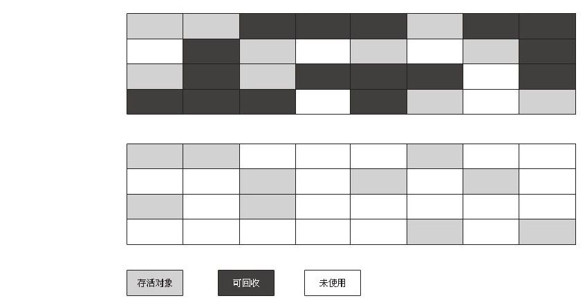

JVM
目录
本文内容主要摘抄自《深入理解Java虚拟机：JVM高级特性与最佳实践（第2版）》。
GC
判断对象是否存活
引用计数算法
注：主流的 Java 虚拟机里没有选用引用计数算法来管理内存。
给对象中添加一个引用计数器，每当有一个地方引用它时，计数器值就加 1；当引用失效时，计数器值就减 1；任何时刻计数器为 0 的对象就是不可能再被使用的。
但是它很难解决对象之间想要循环引用的问题，即两个对象只是相互持有对方的引用，但是实际它们都不会被访问到的情况。
可达性分析算法
基本思路是通过一系列的称为 GC Roots 的对象作为起始点，从这些节点开始向下搜索，搜索所走过的路径称为引用链（Reference Chain），当一个对象到 GC Roots 没有任何引用链相连（即从 GC Roots 到这个对象不可达）时，则证明此对象不可用。
可作为 GC Roots 的节点主要在全局性的引用（例如常量或类静态属性）与执行上下文（如栈帧中的本地变量表）中。
在 Java 语言中，可作为 GC Roots 的对象包括下面几种：
虚拟机栈（栈帧中的本地变量表）中引用的对象。
方法区中类静态属性引用的对象。
方法区中常量引用的对象。
本地方法栈中 JNI（即一般说的 Native 方法）引用的对象。
垃圾收集算法
标记-清除算法(Mark-Sweep)
首先标记出所有需要回收的对象，在标记完成后统一回收所有被标记的对象。
不足：
效率。
标记和清除两个过程的效率都不高。
空间。
标记清除后会产生大量不连续的内存碎片。

图 1: 标记-清除算法示意图
复制算法(Copying)
将内存划分为两块，每次只使用其中一块。当这一块的内存用完了，就将还存活着的对象复制到另外一块上，然后将已使用过的内存空间一次清理掉。
不足：
- 可用内存变少。
HotSpot 中采用 Eden:Survivor:Survivor 比例 8:1:1 来划分空间，每次新生代可用80%+10%，当 Survivor 空间不够用时，需要依赖其它内存（这里指老年代）进行分配担保（Handle Promotion）。
图 2：复制算法示意图
标记-整理算法(Mark-Compact)
一般用于老年代。
先标记可清理对象，然后将存活对象向一端移动，再直接清理掉端边界以外的内存。
图 3：标记-整理算法示意图
分代收集算法(Generational Collection)
根据对象存活周期的不同将内存划分为几块，一般是把 Java 堆分为新生代和老年代。在新生代中，采用复制算法；在老年代中，使用标记-清除或标记-整理算法。
类加载机制
类的生命周期
加载（Loading）-连接（Linking）-初始化（Initialization）-使用（Using）-卸载（Unloading）。
其中连接（Linking）又可分为验证（Verification）-准备（Preparation）-解析（Resolution）三个阶段。
虚拟机规范严格规定了有且仅有 5 种情况必须立即进行类初始化：
遇到 new、getstatic、putstatic 或 invokestatic 这四条字节码指令时，若类没有进行过初始化，则需要先触发其初始化。生成这 4 条指令的最常见的 Java 代码场景是：使用 new 关键字生成实例化对象时、读取或设置一个静态字段（被 final 修饰，已在编译期把结果放入常量池的静态字段除外）时，以及调用一个类的静态方法的时候。
使用 java.lang.reflect 包的方法对类进行反射调用的时候，如果类没有进行过初始化，则需要先触发其初始化。
当初始化一个类的时候，如果发现其父类还没有进行过初始化，则需要先触发其父类的初始化。
当虚拟机启动时，用户需要指定一个要指定的主类（包含 main() 方法的那个类），虚拟机会先初始化这个主类。
当使用 JDK 1.7 的动态语言支持时，如果一个 java.lang.invoke.MethodHandle 实例最后的解析结果 REF_getStatic、REF_putStatic、REF_invokeStatic 的方法句柄，并且这个方法句柄所对应的类没有进行过初始化，则需要先触发其初始化。
以上 5 种场景中的行为称为对一个类进行主动引用，除此之外，所有引用类的方式都不会触发初始化，称为被动引用。比如：
通过子类引用父类的静态字段，不会导致子类初始化。
通过数组定义来引用类，不会触发此类的初始化。
常量（static final）在编译阶段会存入调用类的常量池中，本质中并没有直接引用到定义常量的类，因此不会触发定义常量的类的初始化。
准备阶段
准备阶段会正式为类变量分配内存并设置初始值，这些变量使用的内存都将在方法区中分配。这个阶段是初始化为零值，类构造器 <clinit> 方法在初始化阶段才会执行。若类变量为常量，此阶段会被初始化为指定的值。
初始化阶段
初始化阶段主要是执行 <clinit> 方法。该方法是由编译器自动收集类中的所有类变量的赋值动作和静态语句块中的语句合并产生的，语句顺序与源文件中出现顺序一致。
静态语句块只能访问到定义在静态语句块之前的变量，定义在它之后的变量，可以赋值，但不能访问。
虚拟机会保证子类的 <clinit> 方法执行前，父类的 <clinit> 方法已经执行完毕。
接口的 <clinit> 方法不需要先执行父接口的 <clinit> 方法，只有当父接口中定义的变量被使用时才会初始化。
参考
- 《深入理解Java虚拟机：JVM高级特性与最佳实践（第2版）》